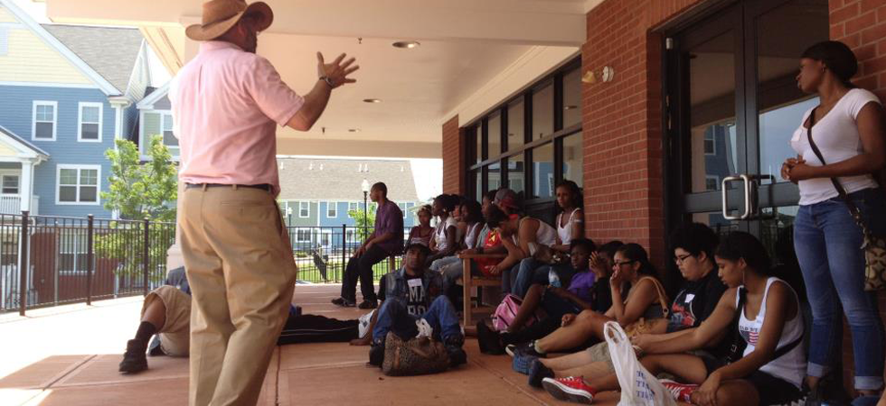

- 
LATEST NEWS
 "Are We Rolling?"
"Are We Rolling?"
Three or four days a week, students from public schools across Greater New Haven arrive at the
studios of Youth Rights Media (YRM) for a three-hour, intensive, afterschool program. Sitting
around a large table in the color-splashed, loft-like studio on Willow Street,
in the East Rock section, they snak on pretzels and cocoa and talk documentary:
shooting, editing, battery life and memory cards before getting to work.
OUR AWARDS
- 2008 Champion in Action, Citizens Bank
- 2007 Reebok Human Rights Award - Executive Director,
Laura McCargar - 2006 Revolutionary Visionary Award, Arts Council of
Greater New Haven - 2006 Audience Choice Award, Wesport Youth Film Festival
- 2006 Criminal Justice Award, Media That Matters
- 2006 Best Documentary, Westport Youth Film Festival
- 2004 Youth Media Activism Award, Hartford Independent
Media Center - 2002 Winner, Yale Entrepreneurial Society Y50K Competition


SUPPORT
 Local Campaigns
Local Campaigns
One of the principal purposes of this site is to offer tools to grassroots organizers, community organizations, parents, students, and others who seek to mount a campaign against the criminalization of youth in their schools. While each community is different, and the schoolhouse to jailhouse track might not be the same in every place, we have found that the successes, failures, and lessons learned from past campaigns can be helpful in pushing for reform elsewhere.
A Map showing where groups are already involved in advocacy and action to combat the schoolhouse to jailhouse track.
EVENTS

P lease join us Thursday, February 4th, from 6-7:30pm, at our space on 77 Willow Street, 2nd fl., in New Haven,
as we showcase the short documentary and other new work created by young people in our fall Media Arts program.
Youth from YRM’s Intro. to Film, Advanced Film and Music workshops will be on hand to share and discuss their
media creations. Refreshments will be served. Hope to see you here!